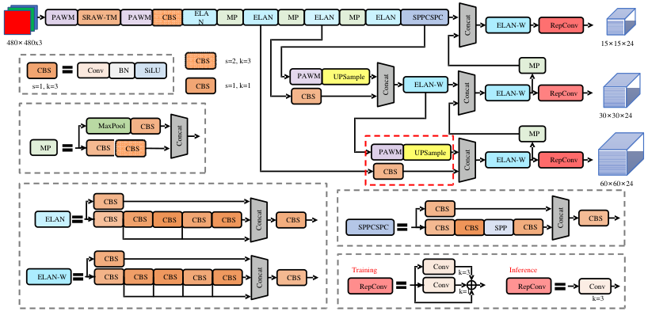

Overview
PWST-YOLO inserts two modules into YOLO detectors for underwater debris: PWAM, a phase-aware amplitude/phase aggregation block that replaces selected convolutions, and SRAW-TM, a Transformer block with space-reduction attention that replaces down-sampling. We evaluate on our mini-Trash dataset (1006 J-EDI images, 3 classes) and on TrashCan.
Method
PWAM: amplitude and phase
Each feature vector is a wave with amplitude |z| and phase θ. After Euler expansion, the output is a real-valued combination of |z|cosθ and |z|sinθ, so no complex tensor is formed and no Fourier transform is involved. The formulation follows WaveMLP (Tang et al., CVPR 2022); in our detector the weights mix channels at each position and the output enters through a zero-initialized residual gate.

SRAW-TM
PWAM aggregation is followed by space-reduction attention (keys and values are shortened by a ratio R, reducing the attention matrix by R²). The encoder depth can be 3 instead of 6.

Architectures


mini-Trash dataset
1006 frames extracted from JAMSTEC J-EDI deep-sea video, 480×320, annotated as debris, bio and machine. Split: 603 train / 201 val / 202 test images from 164 / 103 / 119 source clips.

| Near-duplicate check (test vs. train) | Images | Share |
|---|---|---|
| Byte-identical to a training image | 0 / 202 | 0% |
| From a source clip that is also in training | 195 / 202 | 96.5% |
| Thumbnail correlation ≥ 0.95 with a training image | 49 / 202 | 24.3% |
| Thumbnail correlation ≥ 0.90 with a training image | 72 / 202 | 35.6% |
| dHash Hamming distance ≤ 5 to a training image | 73 / 202 | 36.1% |
Results
Comparison on mini-Trash
| Model | P (%) | R (%) | mAP50 (%) | Params (M) | FLOPs (G) |
|---|---|---|---|---|---|
| Faster R-CNN (ResNet50) | 75.4 | 82.1 | 78.5 | 41.40 | 180.0 |
| DETR (ResNet-101) | 80.1 | 76.8 | 81.5 | 60.20 | 152.0 |
| Deformable-DETR | 81.5 | 78.2 | 82.8 | 39.80 | 173.0 |
| SSD (VGG16) | 70.4 | 75.3 | 72.4 | 26.30 | 61.2 |
| YOLOv7 | 87.2 | 82.6 | 83.4 | 36.60 | 104.7 |
| PWST-YOLOv7 (ours) | 90.5 | 82.5 | 90.2 | 37.14 | 112.5 |
| YOLOv5nu | 72.4 | 66.5 | 71.5 | 2.51 | 3.59 |
| YOLOv8n | 81.5 | 77.2 | 81.0 | 3.01 | 4.10 |
| YOLOv11n | 80.2 | 75.5 | 79.2 | 2.59 | 3.22 |
| PWST-YOLOv11 (ours) | 86.2 | 81.6 | 88.1 | 2.48 | 5.05 |
Controlled re-run under one protocol (revision)
300 epochs, batch 16, same augmentation, COCO-initialised weights where shapes match; model chosen on the validation split only. The 88.1% / 79.2% above are the previously reported numbers and are not reproduced under this protocol.
| Model | Params (M) | GMACs | val mAP50 | test mAP50 | test mAP50-95 |
|---|---|---|---|---|---|
| YOLOv11n (8 runs) | 2.59 | 3.22 | 82.6 ± 1.3 | 89.3 ± 1.1 | 60.7 ± 0.7 |
| PWST-YOLOv11, original configuration (3 runs) | 2.48 | 5.05 | 76.6 ± 1.6 | 86.4 ± 1.0 | 50.4 ± 0.6 |
| SRAW-TM at P4/P5 (3 runs) | 3.66 | 3.56 | 82.4 ± 0.2 | 90.6 ± 0.3 | 59.7 ± 0.9 |
| SRAW-TM at P4/P5 with early PWAM (SRAW-TM at P4/P5 + early PWAM) (3 runs) | 3.67 | 3.75 | 81.0 ± 0.4 | 89.9 ± 0.6 | 60.3 ± 0.1 |
| SRA-only at P4/P5 (SRA only, no PWAM) (3 runs) | 3.25 | 3.40 | 82.8 ± 1.1 | 90.6 ± 0.4 | 60.9 ± 0.4 |
| PWAM-only at P3-P5 (PWAM only, no SRA) (3 runs) | 3.02 | 3.46 | 83.7 ± 1.1 | 90.0 ± 1.9 | 60.7 ± 1.5 |
| WaveMLP token mixing at P3-P5 (WaveMLP PATM at the PWAM-only at P3-P5 positions) (3 runs) | 3.21 | 3.75 | 81.9 ± 1.5 | 89.5 ± 0.8 | 60.8 ± 1.3 |
Qualitative results


Limitations
- Frame-level split. Near-duplicate frames link training and test images; results are optimistic for unseen dives. A clip-level split script is provided.
- Shared source. TrashCan is built from the same J-EDI imagery and is therefore a second benchmark from the same source, not out-of-domain evidence.
- Compute. PWST-YOLOv11 has fewer parameters but 57% more FLOPs than YOLOv11n.
- Few seeds. Three to ten seeds per model; the seed standard deviation is about 1–1.4 points of test mAP50 on 202 test images, so only differences of about 3–4 points are resolved; smaller effects of the modules cannot be excluded. On TrashCan the seed standard deviation is about 4 points with five seeds per model. The YOLOv7 results are single runs from the earlier version.
- Not universal. The module placement was re-designed for YOLOv7 and YOLOv11; a direct insertion into YOLOv26 was unstable.
Reproduce
Full tutorial in the README. Tested with Python 3.12, PyTorch 2.11, Ultralytics 8.4.2.
pip install -r requirements.txt patch -p1 -d "$(python -c 'import ultralytics,os;print(os.path.dirname(os.path.dirname(ultralytics.__file__)))')" < ultralytics_patch/pwst_ultralytics.patch # register the modules unzip weights.zip -d weights # from the GitHub release python train.py --cfg configs/x_gin5.yaml --data data.yaml --name x_gin5_lightaug --seed 90 --light-aug python scripts/eval_corruptions.py data.yaml robust.json x_gin5_la_s90=runs/x_gin5_lightaug_s90/weights/best.pt python scripts/analyze_gin.py # the pre-registered test from the raw results